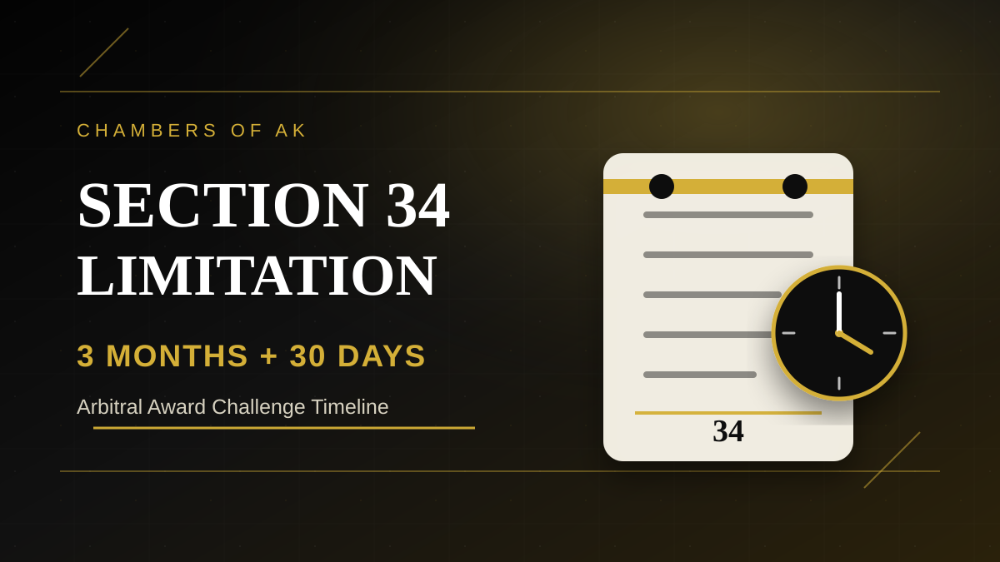

Section 34 arbitration limitation is one of the most unforgiving timelines in Indian arbitration law. This article explains the 3 months + 30 days rule, how to calculate it, and why court holidays do not always save a late filing.

Executive Summary
- A Section 34 application to set aside an arbitral award must ordinarily be filed within three months from receipt of the award.
- If sufficient cause is shown, the court may entertain the application within a further period of 30 days, but not thereafter.
- The date of receipt is excluded. The first period is counted in calendar months, not as a fixed 90-day block.
- Section 4 of the Limitation Act may help only if the original three-month prescribed period expires on a court holiday.
- Section 4 does not extend the additional 30-day condonable period. A one-day delay beyond that outer limit can be fatal.
Introduction: Why Section 34 Limitation Is So Important
Section 34 of the Arbitration and Conciliation Act, 1996 is the principal statutory route for challenging an arbitral award before court. It is not an appeal on merits. It is a limited challenge based on the grounds recognised in Section 34. However, before the court examines those grounds, the applicant must cross a threshold question: was the challenge filed within limitation?
This is where many award-debtors face serious risk. Section 34 arbitration limitation is strict. A party may have arguable grounds against an award, but if the petition is filed beyond the statutory window, the court may never examine the merits. For businesses, public bodies, contractors and litigants, the timeline must therefore be treated as urgent from the date the signed arbitral award is received.
What Section 34(3) Says
Section 34(3) provides that an application for setting aside an arbitral award may not be made after three months from the date on which the party making that application had received the arbitral award. The proviso permits the court to entertain the application within a further period of 30 days if it is satisfied that the applicant was prevented by sufficient cause from making the application within the first three months.
The crucial phrase is “but not thereafter”. The Supreme Court has consistently treated this phrase as a hard outer boundary. The court may condone delay within the further 30 days, but it cannot use the general delay-condonation power under Section 5 of the Limitation Act to go beyond that additional period.
When Does the Clock Start?
The limitation clock does not run merely from the date printed on the arbitral award. It runs from the date on which the party receives the arbitral award. This makes proof of receipt essential. The relevant record may be a tribunal email, courier delivery report, acknowledgement, registry receipt, covering letter or other communication showing when the signed award was delivered.
The date of receipt itself is excluded while computing limitation. If the award is received on 30 June, counting begins on 1 July. This approach follows the ordinary computation rule reflected in Section 12(1) of the Limitation Act and has been applied by the Supreme Court in Section 34 limitation cases.
Three Months Does Not Mean 90 Days
A common mistake is to calculate Section 34 limitation as exactly 90 days. That is unsafe. The phrase used in Section 34(3) is three months, and the Supreme Court has explained that this means three calendar months, not a fixed 90-day period.
For example, if counting begins on 1 July, the three-month period ends on 30 September. Depending on the months involved, three calendar months may not equal exactly 90 days. A limitation chart should therefore use calendar-month counting for the first period and then count 30 actual days only for the further condonable period.
The Additional 30 Days: Condonable, But Not Automatic
The further 30 days under the proviso to Section 34(3) is not an automatic extension. It is a condonable period. The applicant must explain why it could not file within the first three months and must satisfy the court that sufficient cause existed.
Even within the additional 30 days, the safer practice is to file a separate delay-condonation application supported by a clear chronology, affidavit and relevant documents. Courts scrutinise delay closely in arbitration matters because the statutory scheme favours finality and speedy enforcement of arbitral awards.
Why Delay Beyond 3 Months + 30 Days Cannot Be Condoned
In Union of India v. Popular Construction Co., the Supreme Court held that Section 5 of the Limitation Act cannot be used to condone delay beyond the additional 30 days under Section 34(3). The legislative phrase “but not thereafter” was treated as an express exclusion of wider delay-condonation power beyond the statutory outer limit.
The practical consequence is harsh but clear: if a Section 34 challenge is filed after the three-month period plus the maximum further 30 days, the court lacks power to condone the delay merely on equitable grounds. Illness, administrative delay, internal approvals, counsel transition or mistaken calculation may not rescue a petition once the outer limit has expired.
Court Holidays: When Section 4 Helps and When It Does Not
Section 4 of the Limitation Act says that where the prescribed period expires on a day when the court is closed, the act may be done on the day when the court reopens. In Section 34 matters, this rule helps only in a limited situation: where the original three-month prescribed period itself expires on a court holiday, weekend or closure day.
It does not extend the additional 30-day condonable period. This distinction has been reaffirmed in recent Supreme Court decisions. If the first three months ended on a working day, and the additional 30th day later falls during court vacation, filing on reopening is still unsafe and may be held time-barred.
Practical Limitation Calculator
| Step | Question | Practical Rule |
|---|---|---|
| 1 | When was the signed award received? | Preserve the email, courier proof or tribunal communication showing receipt. |
| 2 | Is the receipt day counted? | No. Exclude the date of receipt and start counting from the next day. |
| 3 | How is the first period counted? | Count three calendar months, not 90 days. |
| 4 | What if the three-month deadline is a holiday? | Section 4 may allow filing on the next working day. |
| 5 | What if three months have already expired? | File immediately with a delay-condonation application within the next 30 days. |
| 6 | What if the 30th additional day is a holiday? | Do not assume reopening saves the filing. Current law treats this as high-risk and generally not extendable. |
Illustration 1: Rajpath-Style Calculation
Suppose an arbitral award is received on 30 June 2022. The receipt date is excluded, so counting begins on 1 July 2022. The three-month period expires on 30 September 2022. If the petition is not filed by then, the further 30 days expire on 30 October 2022. A filing on 31 October 2022 would be beyond the maximum condonable period.
This is the type of calculation applied by the Supreme Court in State of West Bengal v. Rajpath Contractors and Engineers Ltd., where the Court reiterated that the limitation period is three months, not 90 days, and treated the filing beyond the additional 30 days as time-barred.
Illustration 2: R.K. Transport-Style Calculation
Suppose the signed award is received on 9 April 2022. The receipt date is excluded. The three-month period expires on 9 July 2022. If 9 July is a court holiday or second Saturday and the next day is Sunday, filing on the next working day may be within limitation because Section 4 applies to the original three-month prescribed period.
This is why the precise nature of the holiday matters. Section 4 can save a filing when the first prescribed period ends on a court-closed day. It does not create a general extension for every delay in a Section 34 matter.
Illustration 3: When Court Vacation Does Not Save the Petition
Now consider a different situation. The original three-month period ends on a working day. The party does not file within that period. It enters the further 30-day condonable window. If that 30th additional day falls during court vacation and the party files only when the court reopens, the petition may still be time-barred.
This is the key lesson from My Preferred Transformation & Hospitality Pvt. Ltd. v. Faridabad Implements Pvt. Ltd. and the line of authority following Assam Urban Water Supply and Bhimashankar Sahakari. Holiday relief cannot be used to enlarge the statutory outer limit beyond what Section 34(3) permits.
Key Supreme Court Judgments
| Case | Core Point | Practical Takeaway |
|---|---|---|
| Union of India v. Popular Construction Co. | Section 5 of the Limitation Act is excluded beyond the additional 30 days. | Delay beyond 3 months + 30 days cannot be condoned. |
| State of H.P. v. Himachal Techno Engineers | Date of receipt is excluded; three months means calendar months. | Do not count 90 days mechanically. |
| Assam Urban Water Supply v. Subash Projects | Section 4 applies to the prescribed period, not the additional 30 days. | Court vacation does not automatically save late filing in the condonable period. |
| Consolidated Engineering Enterprises | Section 14 of the Limitation Act may apply in suitable wrong-forum cases. | Wrong-forum exclusion is fact-specific and not a general extension. |
| Rajpath Contractors | Three months is not 90 days; one day beyond the additional 30 days is fatal. | Maintain a strict date chart. |
| R.K. Transport | Section 4 can help where the original three-month period expires on a holiday. | Next working day filing may be valid in that limited situation. |
| My Preferred Transformation | Section 4 and Section 10 GCA cannot extend the 30-day condonable period. | Do not wait for reopening if only the additional 30-day period is expiring. |
Re-Filing and Defective Filing Risks
Filing within limitation is not only about reaching the court counter with some papers. A defective filing may create serious risk if it is so incomplete that it is treated as non-est, or if registry defects are cured after inordinate delay. Re-filing principles vary with court rules and facts, but arbitration courts generally expect strict diligence.
Parties should avoid last-day filings with missing award copies, unsigned pleadings, incomplete affidavits, absent vakalatnama, defective statement of truth or missing annexures. If registry objections are raised, they should be cured immediately and proof of re-filing should be preserved.
Section 14 of the Limitation Act: Not a Loophole
Section 14 of the Limitation Act may exclude time spent in bona fide proceedings before a wrong forum, provided the statutory requirements of due diligence and good faith are satisfied. The Supreme Court has recognised that Section 14 can apply to Section 34 proceedings in suitable cases.
However, Section 14 is not a general power to condone delay. It is an exclusion provision for a specific wrong-forum situation. A party relying on Section 14 must plead and prove the earlier proceeding, the defect of jurisdiction or similar cause, good faith, due diligence and the exact period sought to be excluded.
Checklist Before Filing a Section 34 Petition
- Record the date of the award and the date of signed-copy receipt.
- Preserve proof of receipt, including email headers, courier records or tribunal communication.
- Exclude the date of receipt and calculate from the next day.
- Count three calendar months, not 90 days.
- Check the court calendar for the three-month expiry date.
- If filing after three months, prepare a separate delay-condonation application within the additional 30 days.
- Do not rely on court vacation to extend the additional 30 days.
- Attach a limitation chart or chronology to the petition.
- File with complete annexures, affidavit, vakalatnama and award copy as required by local rules.
- Cure registry objections immediately and maintain proof of re-filing.
Consequences of Missing the Deadline
If a Section 34 petition is time-barred, the award-debtor may lose the statutory remedy to set aside the award. The award-creditor can then proceed toward enforcement under the Arbitration and Conciliation Act. In commercial disputes, this may lead to attachment, execution pressure, settlement disadvantage and loss of leverage.
This is why award recipients should not wait for internal deliberations, board approvals, accounting review or settlement talks before calculating limitation. The date chart should be prepared on the same day the award is received.
Frequently Asked Questions
What is the limitation period for filing a Section 34 petition?
A Section 34 petition must ordinarily be filed within three months from the date of receipt of the arbitral award. A further 30 days may be condoned if sufficient cause is shown, but not thereafter.
Is Section 34 limitation 90 days or three months?
It is three calendar months, not necessarily 90 days. The length of the first period can vary depending on the months involved.
Is the date of receipt counted?
No. The date on which the award is received is excluded. Counting begins from the next day.
Can delay beyond three months plus 30 days be condoned?
No. Current Supreme Court law treats the additional 30 days as the outer limit. Section 5 of the Limitation Act cannot extend it further.
What happens if the original three-month deadline falls on a court holiday?
Section 4 of the Limitation Act may permit filing on the next working day if the original three-month prescribed period expires when the court is closed.
What if the 30th additional day falls during court vacation?
The current position is that Section 4 does not extend the additional 30-day condonable period. Filing on reopening may be time-barred.
Can Section 14 of the Limitation Act help?
It may help only in specific wrong-forum situations involving due diligence and good faith. It should not be treated as a general extension of Section 34 limitation.
Conclusion
The Section 34 arbitration limitation rule is simple to state but unforgiving in practice. A party must file within three calendar months from receipt of the award. If that is missed, only a further 30 days can be condoned on sufficient cause. Beyond that, the remedy is ordinarily lost.
The safest approach is to prepare a limitation chart immediately after receiving the signed award, verify the court calendar, avoid last-day filing, and treat the additional 30 days as an emergency buffer rather than a normal filing period. In arbitration, delay can decide the entire case before the court ever reaches the merits.
Last updated on: 20/05/2026 at 11:31
Useful Internal Pages
References / Sources
Primary legal sources are listed first. Secondary or repository research materials were used only as publication-preparation support.
- Arbitration and Conciliation Act, 1996, especially Sections 31(5), 34(3), 36 and 43.
- Limitation Act, 1963, especially Sections 4, 5, 12, 14 and 29(2).
- General Clauses Act, 1897, especially Sections 9 and 10.
- Union of India v. Popular Construction Co., (2001) 8 SCC 470.
- Consolidated Engineering Enterprises v. Principal Secretary, Irrigation Department, (2008) 7 SCC 169.
- State of H.P. v. Himachal Techno Engineers, (2010) 12 SCC 210.
- Assam Urban Water Supply & Sewerage Board v. Subash Projects & Marketing Ltd., (2012) 2 SCC 624.
- Bhimashankar Sahakari Sakkare Karkhane Niyamita v. Walchandnagar Industries Ltd., (2023) 8 SCC 453 / 2023 INSC 335.
- State of West Bengal v. Rajpath Contractors and Engineers Ltd., 2024 INSC 477, Supreme Court of India, 08.07.2024.
- My Preferred Transformation & Hospitality Pvt. Ltd. v. Faridabad Implements Pvt. Ltd., 2025 INSC 56, Supreme Court of India, 10.01.2025.
- R.K. Transport Company v. Bharat Aluminium Company Ltd., 2025 INSC 438, Supreme Court of India, 03.04.2025.
- Tata Steel Ltd. v. Raj Kumar Banerjee & Ors., 2025 INSC 639, Supreme Court of India, 07.05.2025.